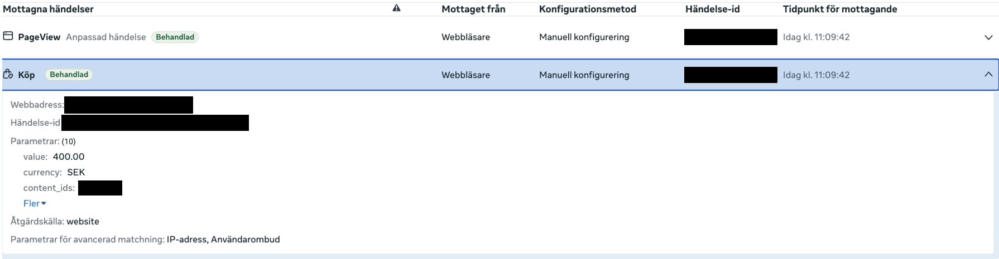
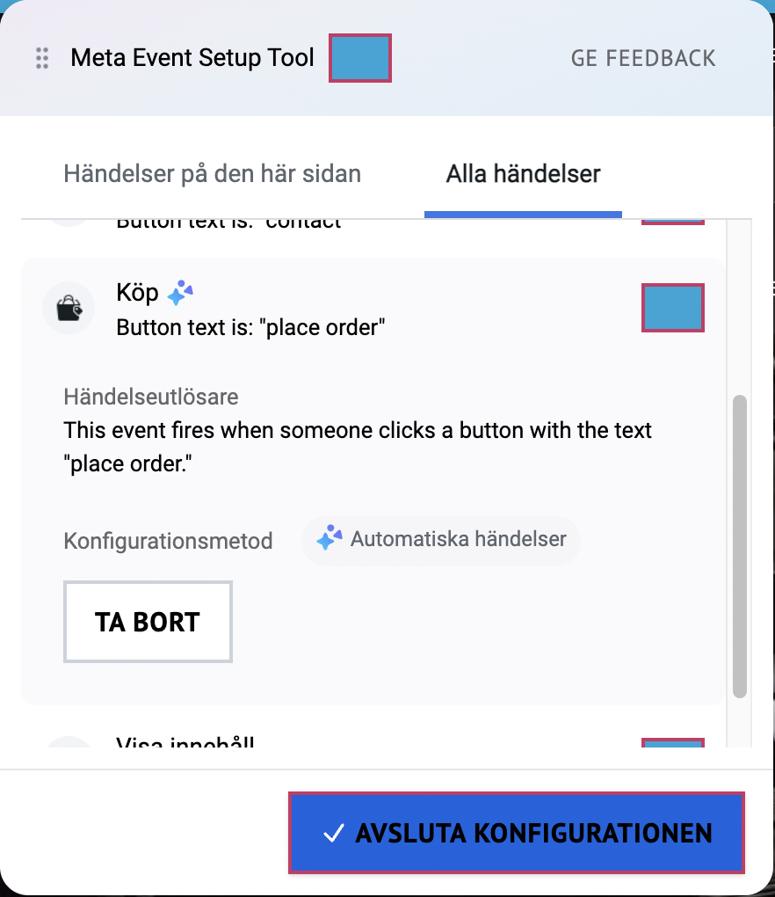
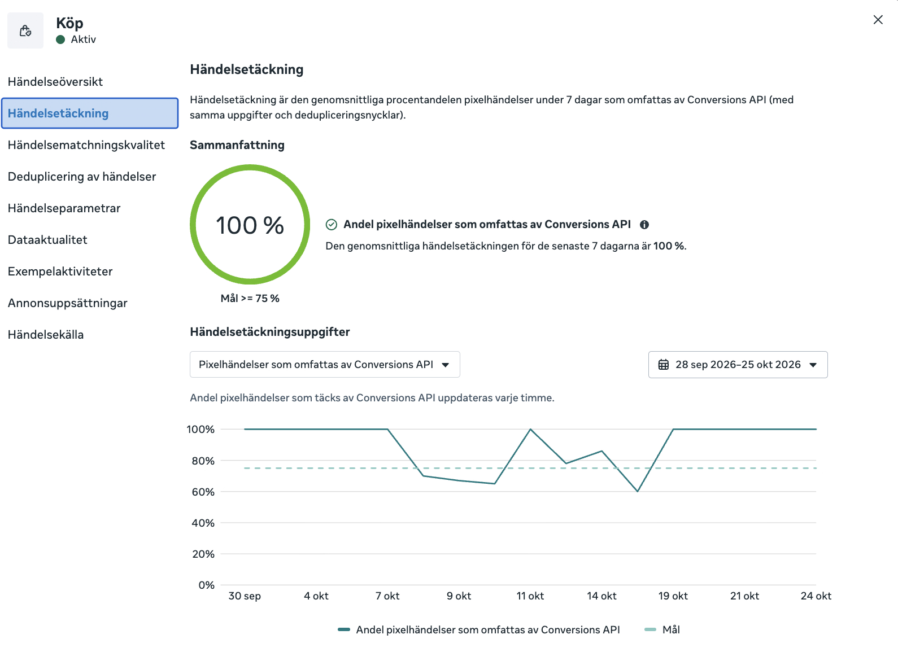

På två veckor fick jag ett e-handelsföretags köpsiffror i Meta att stämma igen. Falska och dubbelräknade köp försvann, och alla köp når nu Meta på båda vägarna. Den största nedgången visade sig vara verklig: färre kunder kom via Google efter en uppdatering av webbutiken. Men Meta hade också egna fel, bland annat köp som räknades när någon bara klickade på en knapp.
Kunden säljer nischade specialprodukter i en webbutik och annonserar på Facebook och Instagram. Annonserna är inställda på att hitta personer som köper. Ungefär en månad innan uppdraget började antalet köp i Meta avvika, medan allt annat såg normalt ut.
Varför det spelar roll: Facebook- och Instagram-annonser lär sig av köpen som Meta registrerar. När Meta räknar köp som inte finns lär sig annonserna fel saker, och företaget betalar för resultat som aldrig hände.
| Vad | Läge |
|---|---|
| Köp i Meta på fyra veckor | 177, men ingen visste om det stämde med verkligheten |
| Matchningskvalitet | 6,1 av 10, Meta kunde bara koppla ungefär hälften av köpen till en verklig person |
| Varningar i Metas felsökningsverktyg | 2 |
Frågan: säljer företaget mindre på riktigt, krånglar kassan, eller mäter Meta fel?
| Ord | Betyder |
|---|---|
| Meta-pixel | en kod på hemsidan som berättar för Meta när någon tittar på en produkt, lägger i varukorgen eller köper |
| Servern (Conversions API) | samma information skickas också direkt från webbutiken. Det fungerar även när kunden har blockerat cookies. |
| Dubbelräkning | när samma köp kommer både från hemsidan och servern måste Meta förstå att det är samma köp. Annars räknas det två gånger. |
| Matchningskvalitet | hur väl Meta kan känna igen vem som köpte, på en skala 0–10. Ju högre, desto bättre kan annonserna hitta liknande köpare. |
| Testkopia (stagingsajt) | en kopia av hemsidan som används för att testa ändringar |
Jag arbetade utifrån en checklista och testade en möjlig orsak i taget mot siffrorna. Två frågor styrde arbetet.
Är antalet köp i Meta samma som antalet ordrar i webbutiken?
Når köpen Meta både från hemsidan och från servern?
Jag gjorde en ändring i taget och följde upp varje ändring dagligen i två veckor, så att det gick att se vad som gjorde skillnad.
| Vem | Bidrog med |
|---|---|
| Jag (Vai Marketing) | all felsökning i Meta: kontroller, testköp, ändringar, analys och uppföljning |
| Kunden | försäljningsdata och information om ändringar på hemsidan |
| Ansvarig konsult (Vai Marketing) | fick löpande uppdateringar och gav klartecken till ändringar |
Flera av mina första gissningar var fel, och jag strök dem när siffrorna sa emot dem.
| När | Vad jag gjorde | Vad jag hittade |
|---|---|---|
| Dag 1 | Kollade varifrån köpen kom | Både hemsidan och servern skickade köp. Spårningen hade inte slutat fungera. |
| Dag 1 | Gick igenom ändringshistoriken i Meta | Inget hade ändrats när avvikelsen började. Men en vecka före uppdraget hade en automatisk funktion slagits på. |
| Dag 1 | Kollade vad som räknades som ett köp | Sedan dess räknades ett klick på knappen ”place order” som ett köp, även om kunden aldrig betalade. |
| Dag 1 | Gick igenom Metas varningar | Kundens testkopia av hemsidan skickade data till samma konto. |
| Dag 2 | Jämförde med kundens ordrar | Meta missade inga köp. Försäljningen hade sjunkit på riktigt, främst från Google. |
| Dag 2 | Frågade kunden om ändringar på hemsidan | Webbutiken hade uppdaterats precis när avvikelsen började, och kopplingen till Google slutade då fungera. |
| Dag 3 | Gjorde ett eget testköp | Köpet räknades rätt. Men ett klick på ”lägg i varukorg” räknades två gånger. |
| Dag 3 | Jämförde hemsidan och servern | Servern skickade bara hälften så många köp som hemsidan efter en uppdatering. |
| Dag 17 | Gick igenom inställningarna med kunden | Kopplingen mellan webbutiken och Meta var rätt uppsatt. |

Fyra löste jag i Meta, och det femte låg hos kundens koppling till Google.
| Problem | Varför det hände | Vad jag gjorde | Status |
|---|---|---|---|
| Falska köp | En automatisk funktion i Meta räknade klick på ”place order” som köp, utöver det riktiga köpet. | Tog bort den och stängde av funktionen. | Löst |
| Varukorgsklick räknades två gånger | En gammal inställning skickade en extra händelse. | Tog bort den och kontrollerade med ett test. | Löst |
| Testdata blandades in | Testkopian av hemsidan skickade data till kundens riktiga konto. | Spärrade testkopian i Meta. | Löst |
| Servern tappade köp | En uppdatering av webbutikens Meta-koppling. | Upptäckte tappet och följde upp dagligen tills det var normalt igen, efter ungefär en vecka. | Löst |
| Färre ordrar | Kopplingen till Google slutade fungera efter en uppdatering av webbutiken. | Visade det med kundens orderdata. Kunden felsöker kopplingen. | Utanför Meta |

Köpen räknas nu rätt: varje order räknas en gång och kommer fram till Meta både från hemsidan och från servern.

| Vad som mättes | Före | Efter |
|---|---|---|
| Köp som når Meta på båda vägarna | 60–72 % | 100 % |
| Köp som Meta känner igen som samma köp (räknas inte dubbelt) | 73 % | 100 % |
| Köp med ordernummer och ordervärde | – | 100 % |
| Falska köp per dag | cirka 1 | 0 |
| Antal gånger ett varukorgsklick räknas | 2 | 1 |
| Varningar i Metas felsökningsverktyg | 2 | 1 |
| Matchningskvalitet (0–10) | 6,1 | 6,1 |
Matchningskvaliteten är oförändrad eftersom den beror på att kundens e-post och telefon skickas med från hemsidan. Det kräver en ändring på hemsidan och låg utanför uppdraget.
Vad det betyder för kunden: annonserna lär sig nu av riktiga köp i stället för klick och dubbletter. Kunden kan också lita på siffrorna när de bedömer om annonserna lönar sig.
När jag jämförde med kundens egna ordrar blev det tydligt att Meta inte missade köp. Ordrarna hade faktiskt blivit färre efter uppdateringen av webbutiken.
Tappet kom främst från Google, där ordrarna föll från 1,5 till 0,5 per dag. Det flyttade fokus från Meta till Google.
Orderdatan visade att nedgången var verklig försäljning och inte ett mätfel. Det flyttade fokus från Meta till Google.
Fem olika fel låg ovanpå varandra, och de dolde varandra.
Flera av mina första gissningar var fel, till exempel att spårningen hade slutat fungera.
En automatisk funktion i Meta skapade falska köp som påverkade annonserna.
Varje förändring i siffrorna sammanföll med en uppdatering av webbutiken.
När jag ändrade en sak i taget och följde upp dagligen gick det att se vad som gjorde skillnad.
Verktyg och metoder: Meta Events Manager (testhändelser, diagnostik, historik och händelsekonfiguration), Meta Ads Manager, Meta Pixel Helper, WordPress och WooCommerce, analys av orderdata i CSV, felsökning steg för steg.